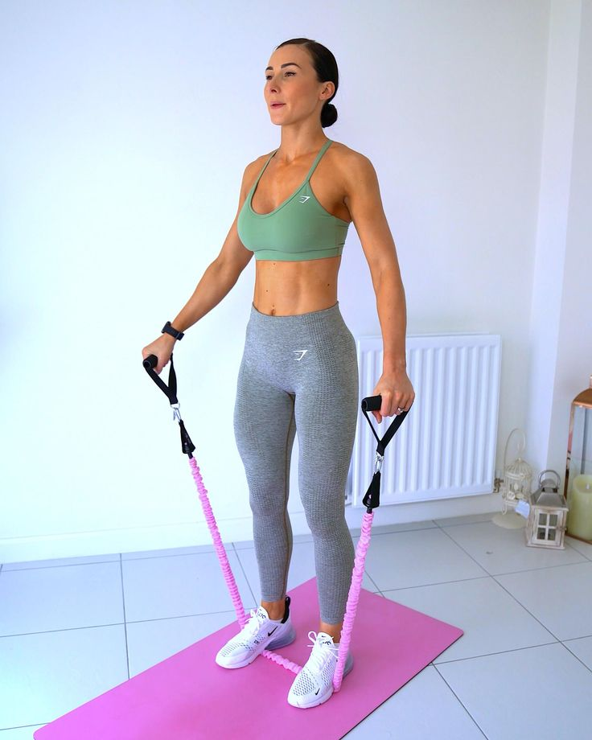

Espatlla - Avançat
COM FER-HO PAS A PAS:
- Pispa la banda elàstica amb tots dos peus deixant tensió a cada costat.
- Subjecta els extrems amb les mans amb els braços al costat del cos.
- Mantén el core actiu i l’esquena recta.
- Eleva els braços lateralment fins que arribin a l’alçada de les espatlles (90°).
- Aguanta 1 segon a dalt sense balancejar el cos.
- Baixa lentament els braços controlant la tensió de la banda.
SÈRIES:
- 3-4 sèries de 10-12 repeticions.
- Descans de 45-60 segons entre sèries.
CONSELLS:
- No facis impuls, el moviment ha de ser lent i controlat.
- Mantén el core activat per estabilitzar el tronc.
- Els colzes lleugerament flexionats, mai bloquejats.
- Concentra l’esforç als deltoides laterals, no al trapezi.
